![Grand salon le soir baigné de lumière violette : canapé d'angle beige en velours côtelé avec coussins violets, lilas et blancs, coussin fleur et plaid lilas, table basse nuage crème avec un bouquet violet et des bougies, grand tapis crème, balançoire œuf blanche illuminée sur un tapis rond violet devant une baie vitrée, rideaux en velours violet, olivier, lampadaire arc doré, lustre en cristal doré, plafond éclairé en violet, étagères blanches lumineuses avec petites plantes et meuble TV suspendu blanc](../assets/img/looks/look022-salon-lumineux-violet.jpg)
Look n°22
Salon lumineux violet et crème
Un grand salon crème baigné de lumière violette : canapé côtelé, table nuage, balançoire œuf illuminée et plafond lumineux. Voici les articles pour recréer ce look chez toi.
Prix au 12/11/2026
-
Canapé d'angle en velours côtelé beige, 250 cm avec méridienne
Canapé en L : 3 places et une méridienne, larges côtes horizontales, poche sur le côté. 250 × 160 cm, 61 cm de haut. Article proche : sur l'image, le canapé a un côté de plus (forme en U) ; le vrai est un L.
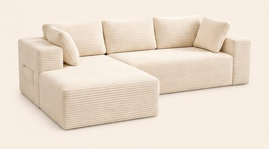
-
Table basse nuage crème, 104 cm
Plateau épais en forme de nuage sur 4 pieds ronds, finition laquée mate. 104 × 63,5 cm, 40 cm de haut.
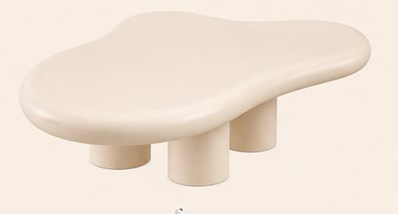
300,00 €Voir sur Amazon -
Meuble TV suspendu blanc cannelé avec LED, 180 cm
Façade cannelée au centre, bouts arrondis, ruban LED de couleur dessous. 180 × 25 cm, 20 cm de haut, pour une télévision jusqu'à 65 pouces.
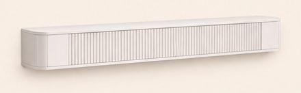
129,99 €Voir sur Amazon -
Fauteuil œuf suspendu blanc avec pied et coussin
Cage à barreaux en résine tressée blanche, pied en arc sur une base en croix, gros coussin crème capitonné fourni. Cage de 94 × 90 cm.
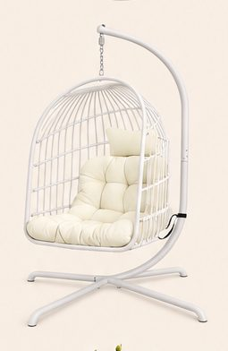
197,99 €Voir sur Amazon -
Lampadaire arc doré, abat-jour en lin
Tige dorée en arc, socle en marbre blanc, hauteur réglable de 158 à 188 cm, intensité variable avec télécommande.
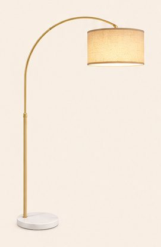
59,99 €Voir sur Amazon -
Grand tapis crème à poils longs, 200 × 300 cm
Très moelleux, antidérapant.
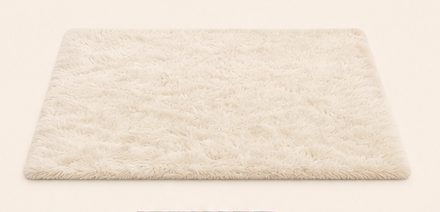
75,99 €Voir sur Amazon -
Tapis rond violet à poils longs, Ø 160 cm
Poils de 3 cm, violet prune. Sur l'image, il paraît un peu plus petit : le vrai fait 160 cm.
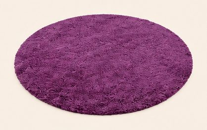
55,90 €Voir sur Amazon -
Olivier artificiel 120 cm et cache-pot écru Ø 20 cm
Tronc fin, petites feuilles et olives ; livré dans un pot noir de 15 cm. Le pot crème de l'image est le cache-pot : Ø 20 cm, 18 cm de haut, vendu par 2.
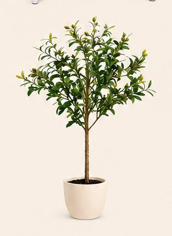
-
Rideau en velours violet avec embrasse, 140 × 270 cm
Velours semi-occultant à œillets, embrasse assortie. Vendu à l'unité : en prendre 2 pour une fenêtre.
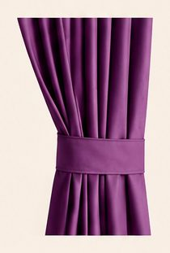
25,42 €Voir sur Amazon -
Étagères murales blanches, 60 cm (lot de 3)
Petit rebord à l'avant, fixations invisibles. 60 × 10 cm chacune.
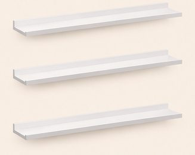
25,99 €Voir sur Amazon -
Plafonnier en cristal doré, Ø 50 cm
Bras dorés en volutes, pampilles et boules de cristal, 5 lumières. 50 cm de large, 45 cm de haut. Article proche : sur l'image, il paraît plus grand ; le vrai fait 50 cm.
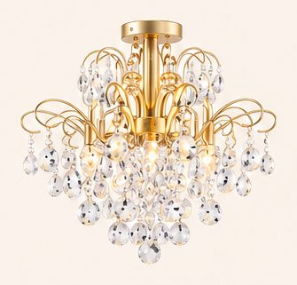
-
Plaid lilas à bulles, 130 × 150 cm
Polaire jacquard 3D très douce. Article proche : les bulles du vrai plaid sont plus petites et plus serrées que sur l'image.
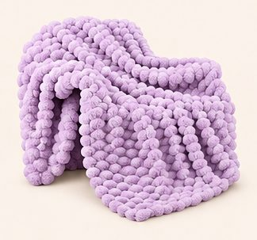
-
Housses de coussin en velours lilas, 40 × 40 cm (lot de 2)
Velours doux, bord plat surpiqué, fermeture cachée. Garnitures 40 × 40 cm à prévoir.
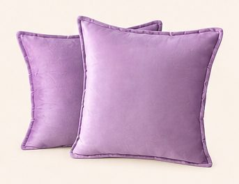
18,31 €Voir sur Amazon -
Housses de coussin en velours côtelé aubergine, 40 × 40 cm (lot de 2)
Larges côtes verticales, fermeture cachée. Garnitures 40 × 40 cm à prévoir.
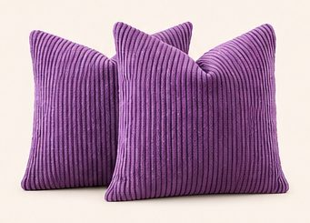
13,99 €Voir sur Amazon -
Housses de coussin en fausse fourrure blanche, 40 × 40 cm (lot de 4)
Fourrure douce à côtes verticales, fermeture cachée. Garnitures 40 × 40 cm à prévoir.
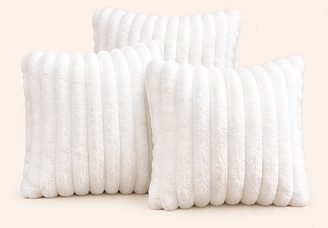
17,99 €Voir sur Amazon -
Coussin fleur lilas en peluche, Ø 40 cm
Six pétales arrondis et cœur blanc, rembourré.
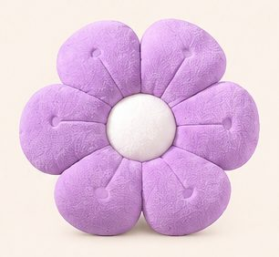
17,88 €Voir sur Amazon -
Fleurs artificielles violettes (2 bouquets)
Roses, dahlias et marguerites en soie, dans les tons violet et lilas. Le vase est le n° 18.
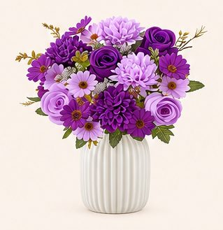
16,99 €Voir sur Amazon -
Vase blanc cannelé en céramique, 20 cm
Forme ovoïde à fines cannelures verticales.
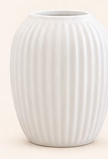
19,99 €Voir sur Amazon -
Mini plantes artificielles en pot (lot de 3)
Eucalyptus et feuillages, 24 cm de haut, pots de 9 cm.
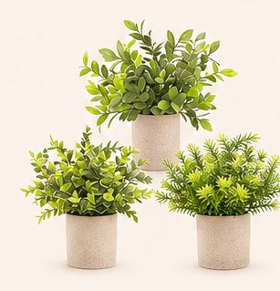
22,99 €Voir sur Amazon -
Bougies LED en verre avec guirlande (lot de 3)
Flamme qui scintille, petite guirlande intégrée, télécommande. 10, 12,5 et 15 cm de haut, Ø 7,5 cm. Article proche : sur l'image, elles sont dessinées environ deux fois plus grandes.
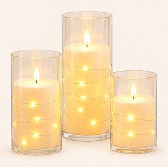
-
Ruban LED blanc chaud 5 m
Ligne de lumière continue, intensité variable avec télécommande. Ici sous les étagères.
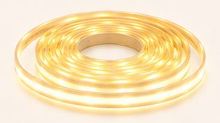
30,99 €Voir sur Amazon -
Guirlandes lumineuses fil de cuivre 10 m (lot de 2)
100 micro-LED blanc chaud chacune, à piles. Ici enroulées sur la balançoire.
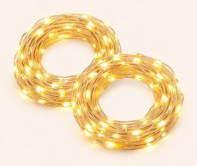
10,99 €Voir sur Amazon -
Ruban LED de couleur 10 m, Wi-Fi
Couleur au choix (ici violet), télécommande, application, Alexa ou Google. Ici caché tout autour du plafond.
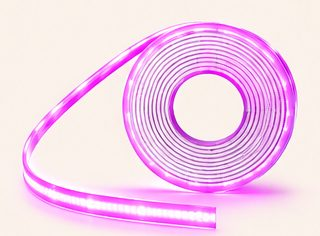
55,99 €Voir sur Amazon
Image d'inspiration générée par IA. Prix indicatifs, revérifiés toutes les deux semaines.